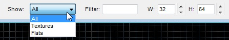
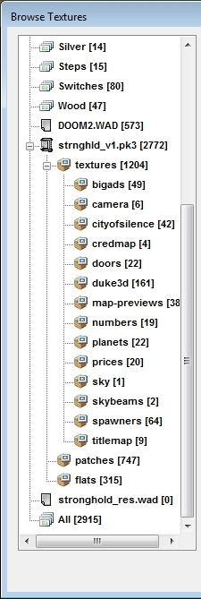

图像浏览器
图像浏览器会显示 Folder、PK3 和 PK7 资源的目录结构，让你可以更轻松地对贴图（Texture）进行分组和查找。
你可以按贴图尺寸筛选贴图。如果当前游戏配置（Game Configuration）支持混合使用贴图和平面贴图（Flat），你可以使用以下下拉列表按图像类型筛选贴图：

技术说明：
对于在 TEXTURES lump 中定义的贴图，将使用第一个补丁（patch）的位置作为贴图路径。
